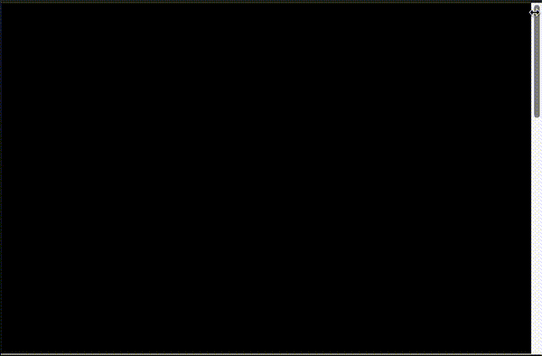
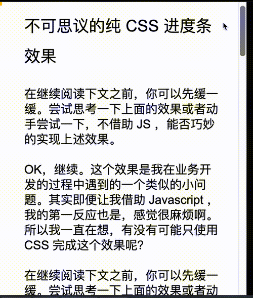
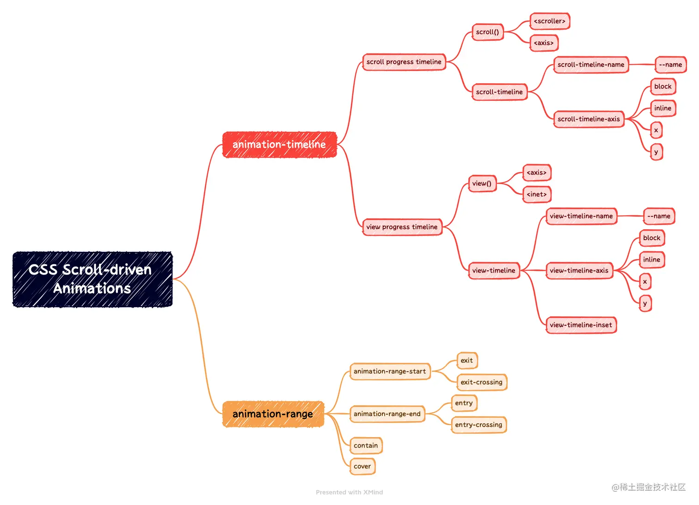
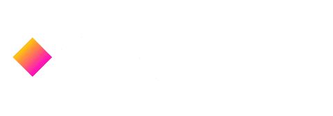
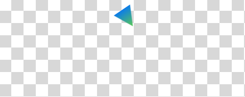
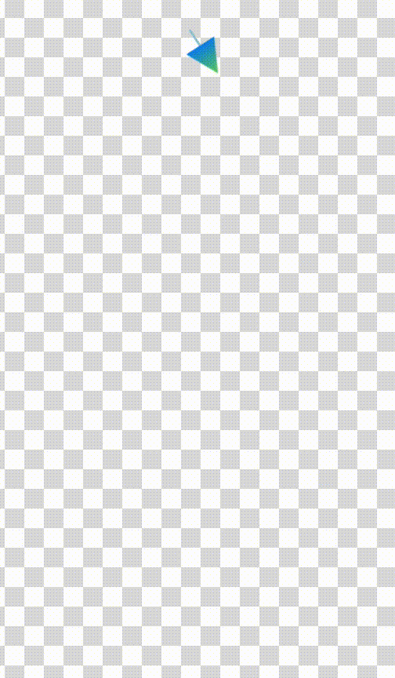
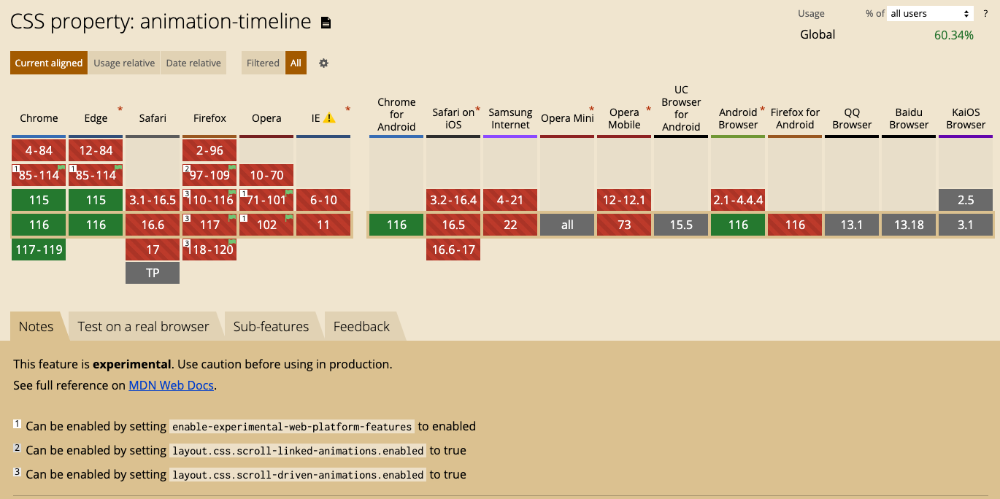

- 60 哪个 css 格式化工具是你的首选
- 59 CSS 选择器详解 12 个必知用法与最佳实践
- 58 动态视口单位之 dvh、svh、lvh
- 57 不规则造型按钮解决方案
- 56 不定宽文本溢出跑马灯效果完美解决方案
- 55 巧用 CSS 变量，实现动画函数复用
- 54 角向渐变的妙用
- 53 有趣的六芒星能力图动画
- 52 有意思的气泡 Loading 效果
- 51 CSS 原生支持的三角函数
- 50 有意思的网格下落加载效果
- 49 有意思的 Emoji 3D 表情切换效果
- 48 神奇的 3D 磨砂玻璃透视效果
- 47 抢先体验！超强大的 Anchor Positioning 锚点定位
- 46 CSS 也能实现碰撞检测
- 45 现代 CSS 解决方案 - 数学函数 Round
- 44 现代 CSS 解决方案 - 原生嵌套
- 43 神奇的背景，生化危机4日食 Loading 动画还原
- 42 当路径动画遇到滚动驱动
- 41 CSS 还原拉斯维加斯球数字动画
- 40 单标签下多色块随机文字随机颜色动画
- 39 CSS 也能实现 if 判断？实现动态高度下的不同样式展现
- 38 Flex 布局下居中溢出滚动截断问题
- 37 带圆角的虚线边框
- 36 现代 CSS 解决方案：文字颜色自动适配背景色
- 35 神奇的 3D 卡片反光闪烁动效
- 34 现代 CSS 解决方案：accent-color 强调色
- 33 巧用 has 和 drop-shadow 实现复杂布局效果
- 32 巧用 CSS + SVG 实现复杂线条光效动画
- 31 极具创意的鼠标交互动画
- 30 标准滚动条控制规范 scrollbar-color 和 scrollbar-width
- 29 类 ChatGpt 多行文本打字效果
- 28 神奇的卡片 Hover 效果与 Blur 的特性探究
- 27 渐变边框文字效果
- 26 巧妙使用多种方式实现单侧阴影
- 25 全尺寸的带圆角的渐变边框
- 24 开发中保证你用得到的 css 小技巧
- 23 您应该了解的 15 个有用的 CSS 属性
- 22 CSS 行元素的截断样式 box-decoration-break 属性
- 21 用 SASS 简化媒体查询
- 20 为什么你应该停止使用传统的 margin 和 padding 来设置 CSS 样式
- 19 sass 优化响应式布局代码
- 18 盘点 CSS 文本两端对齐的 N 种方式
- 17 如何修改滚动条的样式
- 16 CSS 模拟图片透明的棋盘背景
- 15 文本描边完美实现
- 14 你需要自定义 @property 而不是 CSS 变量的情况
- 13 从高度 0 过渡到自动高度
- 12 一些 css 语法解释
- 11 scss 日常用法
- 10 sass 指南
- 09 CSS 颜色设置透明度的新姿势
- 08 CSS 属性 appearance
- 07 CSS 动画性能优化
- 06 CSS 功能特性
- 05 CSS 中的 var() 函数
- 04 15 个你不知道的 CSS 属性
- 03 will-change
- 02 normalize.css 清除元素默认样式
- 01 纯 CSS 获取屏幕宽高
本文，我们将一起利用纯 CSS，实现如下这么个酷炫的效果：

在一年前，我介绍了 CSS 中非常新奇有趣的一个新特性 -- @scroll-timeline：革命性创新，动画杀手锏 @scroll-timeline。
利用这个新特性，我们可以轻松的将原本基于时间控制的动画效果，交给页面的滚动特性进行控制，像是这样：
只是，该特性由于诸多原因，遭到了规范废弃。
然而，时隔一年半，规范带着新的 animation-timeline 王者回归！我们可以将其简单理解为：Scroll-driven Animations（滚动驱动动画）。
什么是滚动驱动动画（Scroll-driven Animations）？
OK，我们通过一个例子，快速上手（回忆）滚动驱动动画。
我们来实现这么一个滚动进度指示器效果：

注意看 GIF 图的上方，有一个黄色进度条，可以通过滚动，改变黄色进度条的进度状态。这个也就是我们说的滚动指示器效果。
在之前，这个效果利用纯 CSS 是不太好实现的，但是有了 animation-timeline 之后，一切都将变得非常轻松。
假设我们有如下结构：
<div id="g-container">
<h1>不可思议的纯 CSS 进度条效果</h1>
<p>OK，继续....../p> // ...</p>
</div>
body {
overflow: scroll;
}
#g-container {
width: 100vw;
}
其中，#g-container 有非常多的内容，其长度远远超过 100vh，也就是一个屏幕的高度。并且，body 是设置了 overflow: scroll 的。因此，整个页面是可以进行滚动的：
好，接下来，我们需要加上进度条，实现的方式有非常多种，这里我通过给 #g-container 添加一个伪元素，将进度条的效果设置给这个伪元素，代码也非常简单：
#g-container::before {
content: "";
position: fixed;
height: 7px;
left: 0;
top: 0;
right: 0;
background: #ffc107;
animation: scale 3s linear infinite;
transform-origin: 0 50%;
}
@keyframes scale {
0% {
transform: scaleX(0);
}
100% {
transform: scaleX(1);
}
}
这里，利用元素的缩放，从 transform: scaleX(0) 到 transform: scaleX(1) 的变化，实现了进度条的动画效果。
只不过，目前是一个无限动画，一次动画效果持续 3 秒 -- animation: scale 3s linear infinite：
好，铺垫到这里，接下来终于要轮到 animation-timeline 登场了。
上述的动画效果，目前是由时间进行控制的，持续时长为 3s，而我们的目标，就是利用滚动的效果控制整个动画。
我们只需要简单的改造一下代码：
#g-container::before {
// ...
animation: scale 3s linear;
animation-timeline: scroll(root);
transform-origin: 0 50%;
}
这里，我们仅仅加了一句 animation-timeline: scroll(root)，表示利用滚动进行元素的动画控制，并且利用的是 root 元素的滚动，也就是 body 元素的滚动进行控制。
这样，我们就轻松的实现了一个滚动指示器效果：
完整的代码，你可以戳这里：CodePen Demo -- 使用 scroll-animation 实现滚动指示器进度条
当然，整个滚动驱动动画（Scroll-driven Animations）的内容还是非常多的，本文不对基础语法做过多展开，大家可以通过下面两个途径，进一步了解新语法：
- MDN 文档 -- animation-timeline
- XboxYan 大佬的 CSS 滚动驱动动画终于正式支持了~
借用 XboxYan 文章中的一幅图：
motion-path 运动路径动画
好，到目前位置，我们都还在铺垫内容，本文的核心是当路径动画遇到滚动驱动。
那么，了解完滚动驱动动画之后，我们再来了解一下，什么是运动路径动画 -- motion-path。
motion-path 在之前，也有过系统的介绍 -- 探秘神奇的运动路径动画 Motion Path
什么是 CSS Motion Path 运动路径？利用这个规范规定的属性，我们可以控制元素按照特定的路径进行位置变换的动画。并且，这个路径可以是非常复杂的一条路径。
初窥 motion-path
CSS Motion Path 规范主要包含以下几个属性：
offset-path：接收一个 SVG 路径（与 SVG 的 path、CSS 中的 clip-path 类似），指定运动的几何路径offset-distance：控制当前元素基于offset-path运动的距离offset-position：指定offset-path的初始位置offset-anchor：定义沿offset-path定位的元素的锚点。 这个也算好理解，运动的元素可能不是一个点，那么就需要指定元素中的哪个点附着在路径上进行运动offset-rotate：定义沿offset-path定位时元素的方向，说人话就是运动过程中元素的角度朝向
下面，我们使用 Motion Path 实现一个简单的直线位移动画。
<div></div>
div {
width: 60px;
height: 60px;
background: linear-gradient(#fc0, #f0c);
offset-path: path("M 0 0 L 100 100");
offset-rotate: 0deg;
animation: move 2000ms infinite alternate ease-in-out;
}
@keyframes move {
0% {
offset-distance: 0%;
}
100% {
offset-distance: 100%;
}
}
offset-path 接收一个 SVG 的 path 路径，这里我们的路径内容是一条自定义路径 path("M 0 0 L 100 100")，翻译过来就是从 0 0 点运动到 100px 100px 点。
offset-path接收一个 SVG 路径，指定运动的几何路径。与 SVG 的 path、CSS 中的 clip-path 类似，对于这个 SVG Path 还不太了解的可以戳这里先了解下 SVG 路径内容：SVG 路径
我们会得到如下结果：

通过控制元素的 offset-distance 从 0% 变化到 100% 进行元素的路径动画。
当然，上述的动画是最基本的，我可以充分利用 path 的特性，增加多个中间关键帧，稍微改造下上述代码：
div {
// 只改变运动路径，其他保持一致
offset-path: path(
"M 0 0 L 100 0 L 200 0 L 300 100 L 400 0 L 500 100 L 600 0 L 700 100 L 800 0"
);
animation: move 2000ms infinite alternate linear;
}
@keyframes move {
0% {
offset-distance: 0%;
}
100% {
offset-distance: 100%;
}
}
这里最主要还是运用了 path 中的 L 指令，得到了如下图这样一条直线路径：
最终的效果如下，与利用 transform: translate() 添加多个关键帧类似：
完整的 Demo 你可以戳这里：CodePen Demo -- CSS Motion Path Demo
曲线路径动画
上面的运动轨迹都是由直线构成，下面我们看看如何使用 CSS Motion Path 实现曲线路径动画。
其实原理还是一模一样，只需要在 offset-path: path() 中添加曲线相关的路径即可。
在 SVG 的 Path 中，我们取其中一种绘制曲线的方法 -- 贝塞尔曲线，譬如下述这条 path，其中的 path 为 d="M 10 80 C 80 10, 130 10, 190 80 S 300 150, 360 80"：
<svg width="400" height="160" xmlns="http://www.w3.org/2000/svg">
<path
d="M 10 80 C 80 10, 130 10, 190 80 S 300 150, 360 80"
stroke="black"
fill="transparent"
/>
</svg>
对应这样一条连续的贝塞尔曲线：

将对应的路径应用在 offset-path: path 中：
<div></div>
div:nth-child(2) {
width: 40px;
height: 40px;
background: linear-gradient(#fc0, #f0c);
offset-path: path("M 10 80 C 80 10, 130 10, 190 80 S 300 150, 360 80");
}
@keyframes move {
0% {
offset-distance: 0%;
}
100% {
offset-distance: 100%;
}
}
可以得到如下运动效果：
可以看到，元素是沿着贝塞尔曲线的路径进行运动的，并且，由于这次没有限制死 offset-rotate，元素的朝向也是跟随路径的朝向一直变化的。（可以联想成开车的时候，车头一直跟随道路会进行变化的，带动整个车身的角度变化）
完整的 Demo 你可以戳这里：CodePen Demo -- CSS Motion Path Demo
Amazing！路径动画配合滚动驱动
好，终于，到这里，你应该已经大致了解了什么是路径动画 motion-path，什么是滚动驱动 scroll-driven。
我们可以尝试把这两个东西组合在一起。
假设，我们有这么个 HTML 结构：
<div class="g-container">
<div class="ele"></div>
</div>
body {
width: 100%;
height: 100%;
background: conic-gradient(
#fff,
#fff 90deg,
#ddd 90deg,
#ddd 180deg,
#fff 180deg,
#fff 270deg,
#ddd 270deg
);
background-size: 50px 50px;
}
.g-container {
position: absolute;
top: 0;
left: 50%;
transform: translate(-50%, 0);
width: 700px;
height: 2000px;
}
.ele {
position: absolute;
width: 40px;
height: 40px;
clip-path: polygon(0 0, 100% 50%, 0 100%);
background: linear-gradient(270deg, #65d060, #0887ec);
}
简单解释一下：
- 为了方便理解，我把 body 的背景设置成了格子背景
.g-container是一个远比屏幕高度高的容器，方便整个页面进行滚动.ele是一个小三角形
目前，整个页面是这样的：
下面，我们给 .ele设置一个 offset-path 路径：
.ele {
position: absolute;
width: 40px;
height: 40px;
clip-path: polygon(0 0, 100% 50%, 0 100%);
background: linear-gradient(270deg, #65d060, #0887ec);
offset-path: path("M 350 40 C 1000 1000, -350 1000, 350 1960");
animation: move 4s linear infinite;
}
@keyframes move {
0% {
offset-distance: 0%;
}
50% {
transform: scale(2.5);
}
100% {
offset-distance: 100%;
}
}
其中的核心就是 offset-path: path("M 350 40 C 1000 1000, -350 1000, 350 1960") 这里面，有一个利用 3 次贝塞尔曲线画出来的路径。
并且，我们给它加上了 offset-distance: 0 到 offset-distance: 100% 的动画效果，目前，整个效果是这样的：
可以看到，小三角形，按照特定的路径在进行运动。
为了更好的理解这个动画，我们可以利用 SVG，把这个运动的路径给画出来：
<div class="g-container">
<svg
class="g-svg"
width="400"
height="160"
xmlns="http://www.w3.org/2000/svg"
>
<path
id="svgpath"
d="M 350 40 C 1000 1000, -350 1000, 350 1960"
stroke="black"
fill="transparent"
/>
</svg>
<div class="ele"></div>
</div>
.g-svg {
position: absolute;
top: 0;
left: 50%;
width: 700px;
height: 2000px;
transform: translate(-50%, 0);
}
#svgpath {
stroke: #9bc9de;
stroke-width: 3px;
stroke-dasharray: 2108, 2108;
animation: lineMove 4s linear;
}
@keyframes lineMove {
0% {
stroke-dashoffset: 2108;
}
100% {
stroke-dashoffset: 0;
}
}
我们利用 SVG 路径，成功的将运动的路径绘制了出来，并且，利用 stroke-dasharray 和 stroke-dashoffset，实现了一条线条动画，控制它和小三角形的 motion-path 动画保持一致。
要看懂
stroke-dasharray和stroke-dashoffset实现的线条动画，可能需要翻阅：【Web 动画】SVG 线条动画入门
这样，现在，我们就得到了这么一个动画效果：
到这里，其实还没有运用上滚动驱动，现在，我们把上述经由时间控制的动画效果，交给页面的滚动。
简单改造上述 CSS 代码：
.ele {
position: absolute;
width: 40px;
height: 40px;
clip-path: polygon(0 0, 100% 50%, 0 100%);
offset-path: path("M 350 40 C 1000 1000, -350 1000, 350 1960");
background: linear-gradient(270deg, #65d060, #0887ec);
animation: move 4s linear;
animation-timeline: scroll(root);
}
#svgpath {
stroke: #9bc9de;
stroke-width: 3px;
stroke-dasharray: 2108, 2108;
animation: lineMove 4s linear;
animation-timeline: scroll(root);
}
改动比较简单：
- 去掉两个动画效果的 infinite 关键字
- 添加上
animation-timeline: scroll(root)
此时，我们就可以利用页面的滚动，控制整个动画效果：

完整的 DEMO，你可以戳这里：CodePen Demo -- Scroll Driven & motion path & SVG stroke-dasharray Demo
在灵活掌握了上述内容后，我们就可以利用路径动画及滚动驱动创造出各种妙趣横生的动画效果！
下面是我综合利用各种技巧，实现的一个纯 CSS 滚动动画效果，感受一下：

上述案例中，除了本文介绍的所有内容外，使用了本文没有提及的滚动驱动 API 中的
animation-range以及 CSS 与布局相关的shape-outside属性，如果不太了解这两个属性，需要自行补充相关知识。
Amazing！是不是非常的酷炫有意思，到今天，这种效果已经是纯 CSS 代码就能实现完成的了！
完整的代码基于上述的 DEMO 进行扩展得到，就不贴出来了，感兴趣的可以猛戳：CodePen Demo - CSS Scroll Driven
Can i Use - CSS Scroll Driven
来看看 CSS Scroll Driven 相关的 API 目前的兼容性如何？截止至 2023-09-09，基于 Can i Use - Animation-timeline 的兼容性如下：
可以看到 animation-timeline 已经从 Chrome 115 版本正式得到支持，并且其它浏览器也已经开始大力跟进，让我们给时间一点时间，相信很快 CSS Scroll Driven 会更多的应用于生产环境，创造出各种以往需要借助 JavaScript 才能实现的动画。
而当路径动画遇到滚动驱动，势必会创造出各种妙趣横生的效果，更多有趣的效果组合等待我们去探索发现。